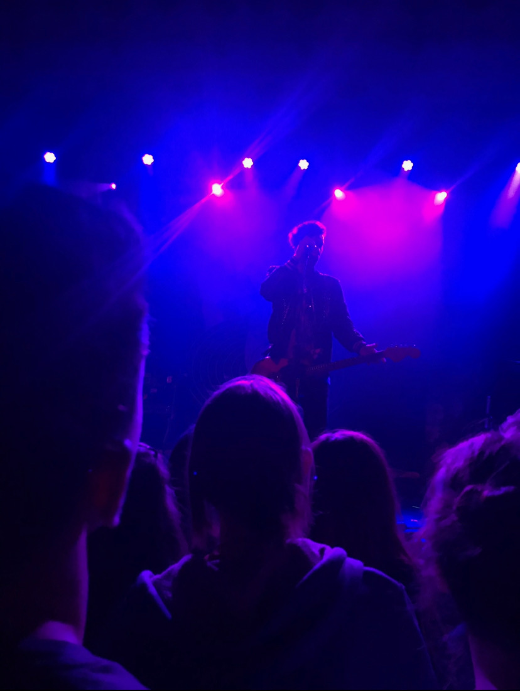

I've been to Lollapalooza twice, and loved the experience both times. I saw some amazing artists perform like Childish Gambino, Louis the Child, and the Chainsmokers.



Though I love the atmosphere of gigantic music festivals, I think my favorite types of shows are smaller, more intimate ones. I've seen some smaller bands like Dreamers, New Politics, and even Hunter Hayes perform in this more intimate setting and it really enhanced my appreciation for smaller shows.
Concert Trivia!!!
Who has Jenny most recently seen in concert?
Harry Styles
Who did Jenny see perform at her first concert?
Maroon 5
Who does Jenny want to see in concert next?
Giveon